Our Facility
Modern CNC and VMC machinery alongside conventional equipment — enabling us to handle components from intricate precision parts to large heavy engineering workpieces.
Complete Equipment List
Our facility is equipped with modern CNC and VMC machinery alongside conventional equipment, enabling us to handle components of varying complexity and scale.
| Machine | Make / Origin | Working Dimensions (mm) | Controller | Type |
|---|---|---|---|---|
| Double Column VMC | KOLB (Germany) | 3500 × 1500 × 1000 | Mitsubishi | CNC / VMC |
| VMC | Hartford | 1020 × 500 × 620 | Fanuc | CNC / VMC |
| VMC | Johnford | 1020 × 500 × 620 | Fanuc | CNC / VMC |
| VMC | Feeler (Taiwan) | 1020 × 500 × 620 | Siemens | CNC / VMC |
| VMC | Samson (Taiwan) | 4000 × 1000 × 900 | Fanuc | CNC / VMC |
| Plano Milling Machine | HEC | 5000 × 2000 × 1800 | DRO | Conventional |
| Horizontal Milling Machines (4 nos.) | — | 1000 × 300 × 300 | Conventional | Conventional |
| Vertical Milling Machines (3 nos.) | — | 1000 × 300 × 300 | Conventional | Conventional |
| Radial Drilling Machines | — | — | — | Conventional |
| EOT Cranes | — | 7.5T & 5T capacity | — | Material Handling |
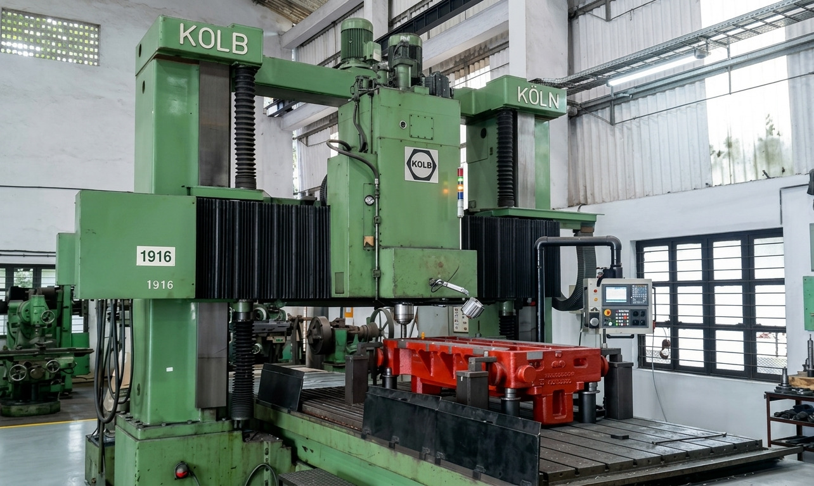
The KOLB Double Column VMC is our most capable machine for large-format precision work. With a 3500mm table length and Mitsubishi controller, it is the backbone of our heavy diecasting and tooling work.
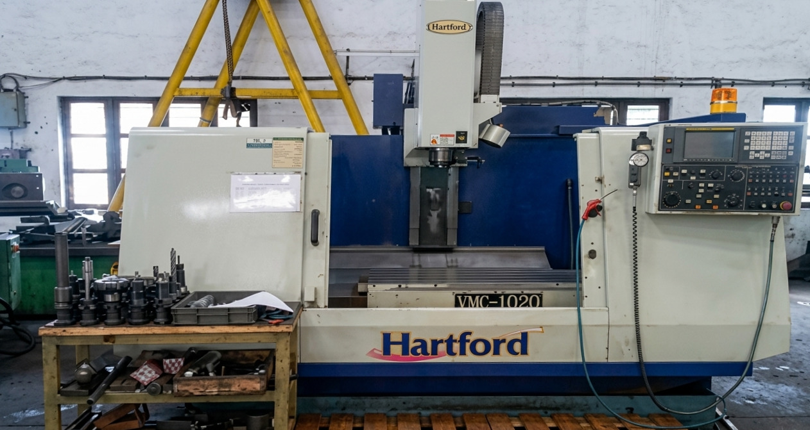
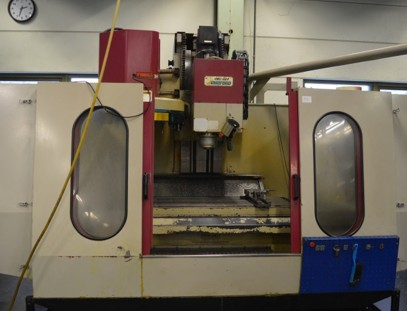
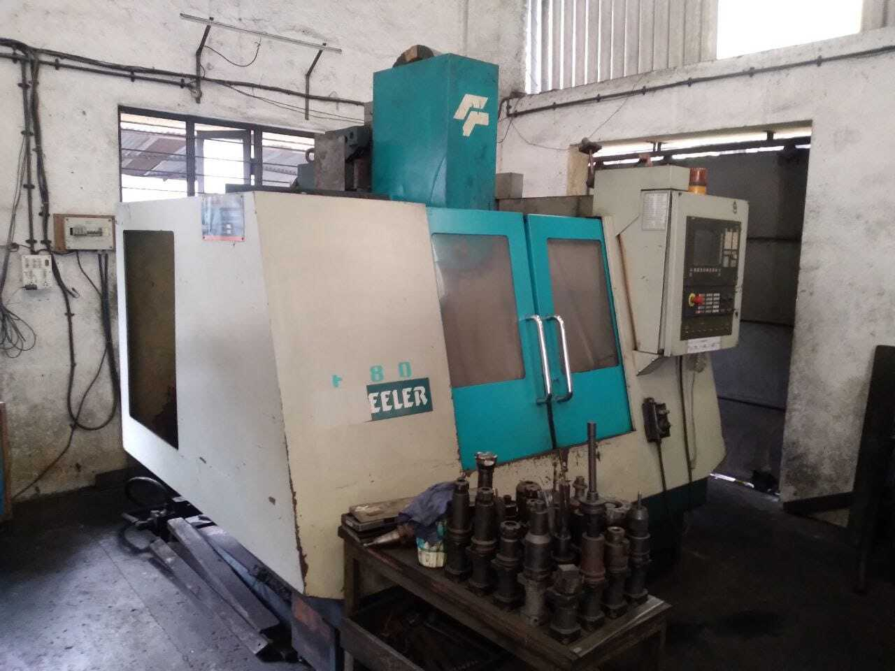
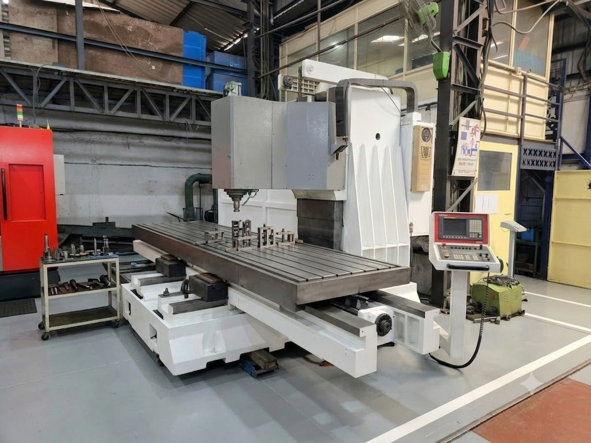
The Samson large-format VMC extends our capability to components up to 4000mm in length with CNC precision — suitable for large fixture plates, bed machining, and structural components.
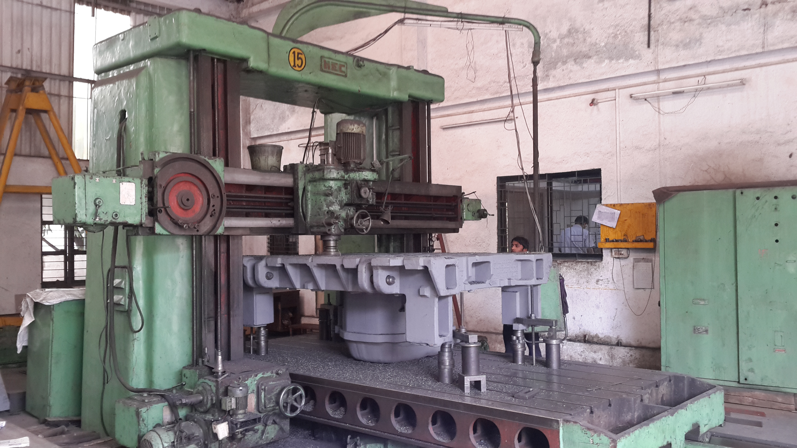
Our HEC Plano Miller is the largest machine in the facility — capable of machining oversized structural components, large surface plates, and heavy fabrications up to 5000mm in length.
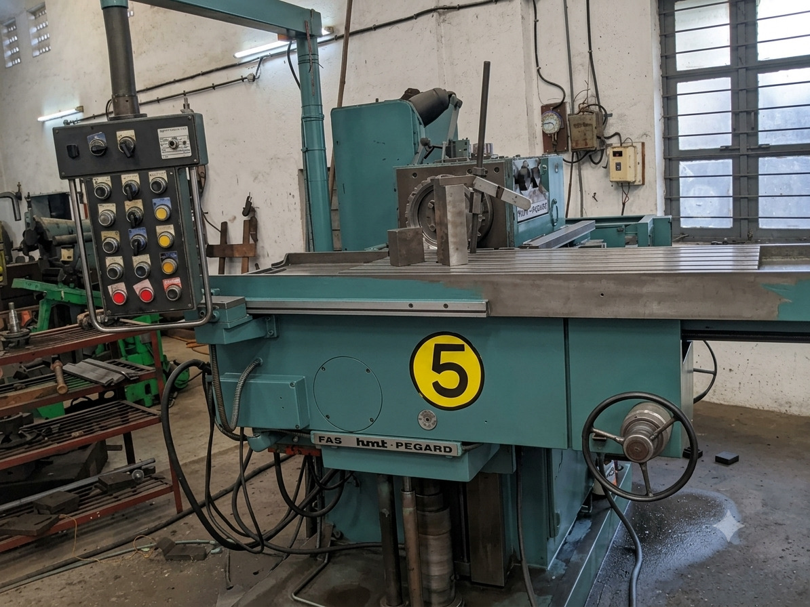
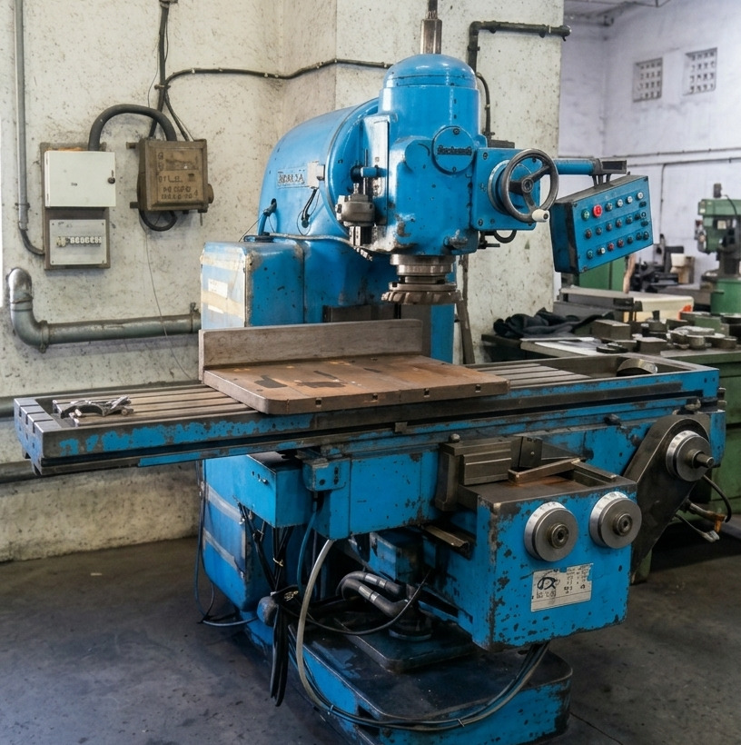
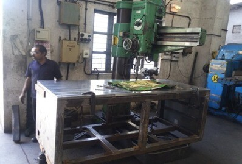
Supporting Infrastructure
Our facility is equipped with overhead EOT cranes with capacities of 7.5 tonnes and 5 tonnes, enabling safe and efficient handling of large and heavy workpieces throughout the production process.
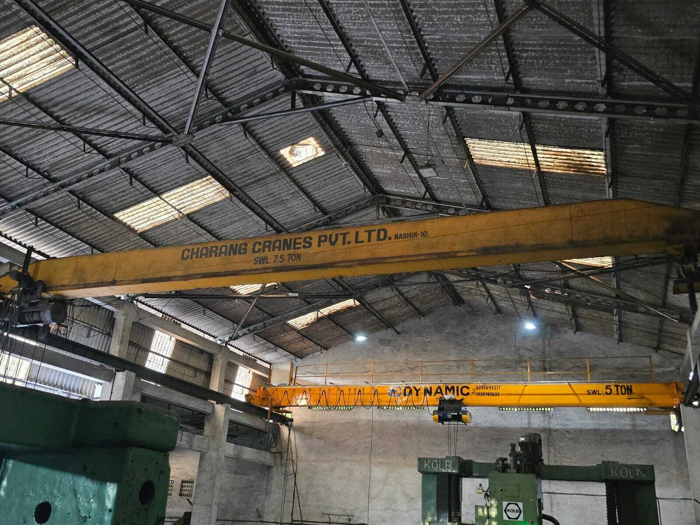
Dedicated machining setup for specialty materials including graphite and titanium — with a centralised vacuum dust collection system and specialised tooling that most facilities cannot offer.
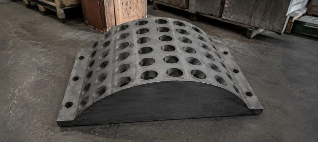
Our team will assess your drawing and advise on the best approach — from material selection to machining strategy.
Send Your Enquiry